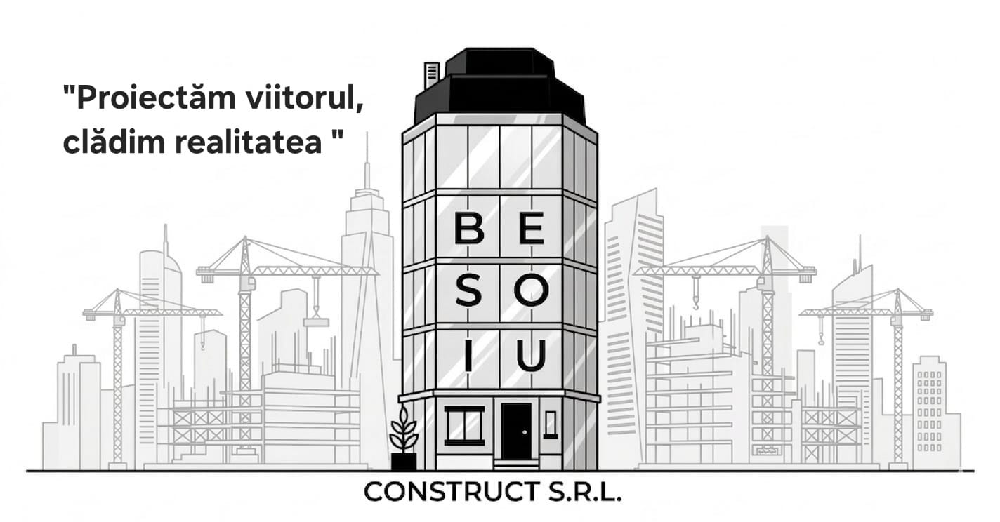
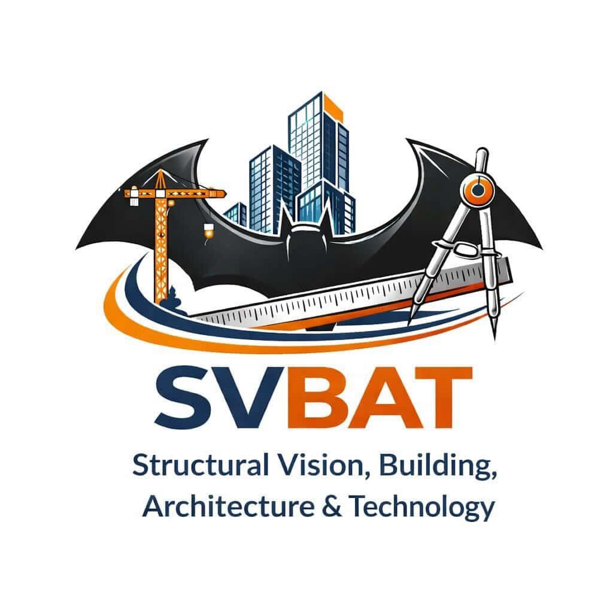
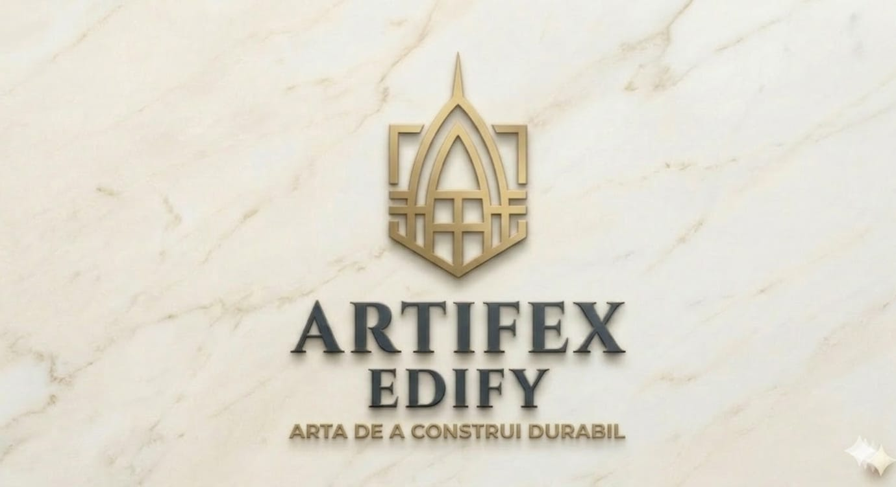
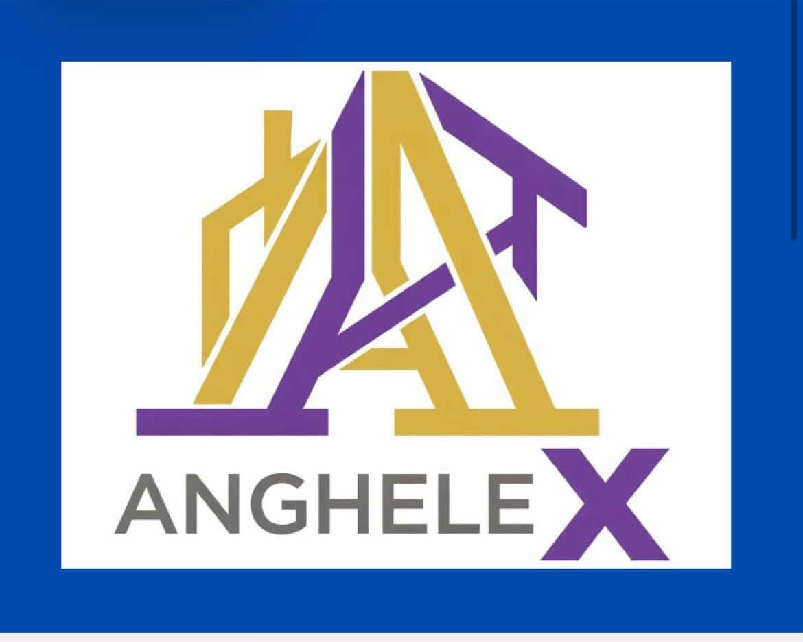
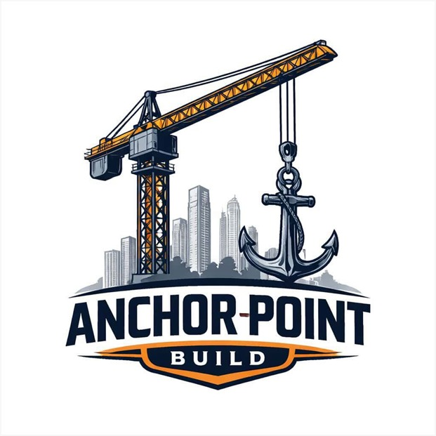

MisacoreBuild
Fundamentul construcțiilor tale
Viziunea noastră: De la sondaj de opinie la rețea națională
Suntem o companie tânără, dinamică și plină de energie, pregătită să reinventeze standardele în logistică și distribuție. Având o bază puternică în Transilvania (Cluj-Napoca), viziunea noastră este de a depăși granițele regionale și de a construi o rețea solidă cu acoperire națională completă.
Punctul nostru forte constă în agilitatea operațională și în deschiderea constantă către noi parteneriate strategice.
Ne propunem să fim mai mult decât un simplu furnizor; dorim să devenim un motor real de creștere pentru partenerii noștri din retail, logistică și industriile conexe. Creăm soluții rapide, adaptate și de încredere, garantând integritatea mărfurilor pe distanțe lungi. Haideți să construim viitorul împreună, deschizând trasee noi spre succes!
De Ce Să Ne Alegi Pe Noi?
De la preluarea comenzilor până la livrare, asigurăm rigoare și seriozitate maximă.
Acoperim rapid principalele orașe din Transilvania pentru ca șantierul tău să nu stea pe loc.
Relațiile noastre comerciale sunt clădite pe încredere reciprocă absolute și transparență totală.
Ne adaptăm rapid propunerile comerciale în funcție de nevoile reale ale pieței și ale clienților.
Suntem mereu proactivi, eliminând din start orice fel de blocaje operaționale.
Punem accent pe excelența materialelor și pe eficiență, nu doar pe volumul de vânzări.
Partenerii Noștri Autorizați
Colaborăm strâns cu specialiști de top pentru a asigura succesul deplin al oricărui proiect, de la schiță la execuție.
Proiectare Structurală

Besoiu Construct
SVBATExecuție

ARTIFEX EDIFY
Anghelex Construct Srl
ANCHOR POINT BUILDING S.R.L